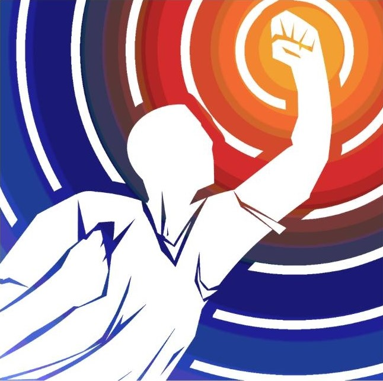
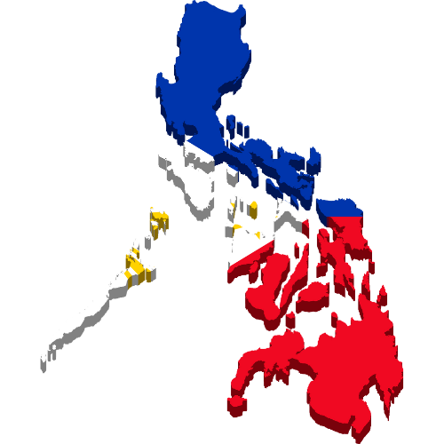
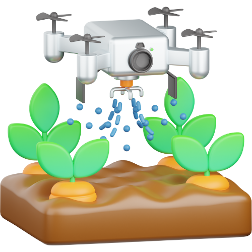
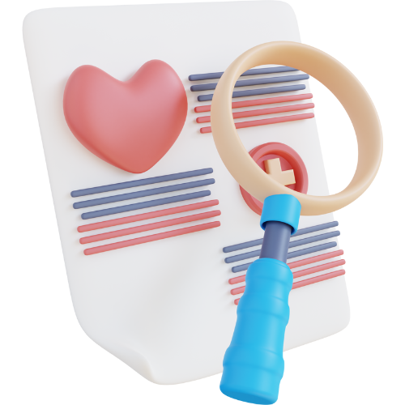
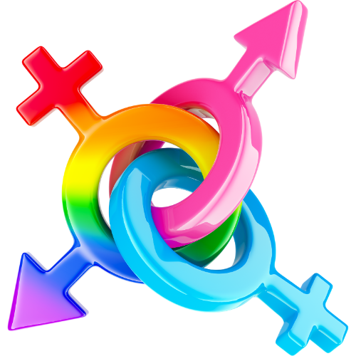

KABATAAN TAYO ang PAG-ASA

KTAP 10-POINT YOUTH AGENDA
1. Free, Quality, and Accessible Education for All
2. Liveable Wage and Jobs for All

3. National Sovereignty

4. Genuine Agrarian Reform and National Industrialization

5. Physical and Mental Health
6. Basic Social Services
7. Justice and Accountability
8. Justice and Ending Tyranny
9. Climate Action

10. Combating Gender-Based Discrimination